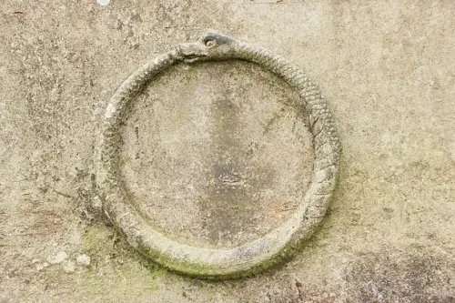
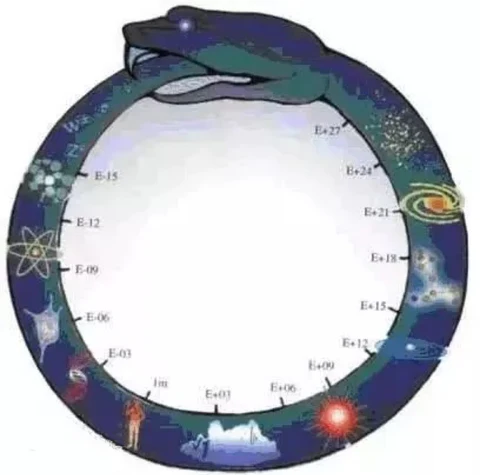

OUROBOROS

Introduction
The Ouroboros is among the most ancient and profound symbols in human history, depicting a serpent or dragon devouring its own tail to form a perfect, closed circle. Originating in Ancient Egypt (circa 1600–1100 BCE in funerary texts), it symbolized unity, eternal return, and the solar cycle—rebirthing itself each dawn after its subterranean journey. The symbol migrated to Greek civilization, becoming a central pillar of Alchemy and Hermetic philosophy, embodying the principle "All is One" (En To Pan). It represents the conservation of energy and matter, perpetually transforming within a continuous, resonant loop.
History
GREEC
In Ancient Greece, the symbol was embraced as a cornerstone of philosophical and alchemical thought. The Greek term originates from two words: "Oura", meaning "tail," and "Boros", meaning "eating" or "devouring." Thus, the Ouroboros literally signifies the concept of cyclical renewal and the intrinsic interdependence of opposites—such as life and death, or creation and destruction. It represents a system that feeds upon itself to maintain immortality, transforming the act of "devouring" from one of destruction into a process of eternal preservation.
EGYPTE
The Ouroboros (Greek for “tail-devourer”), an ancient symbol first found on the shrine of Tutankhamen’s Ancient Egyptian tomb, still resonates with us today. As a symbol of rebirth and regeneration, it spans centuries and cultures. Thought to be a representation of the sun and its movement through the day, the enduring image of a circle—one of nature’s most profound and prolific symbols—appears constantly in our surroundings, all worthy of worship: the sun as it warms our faces and feeds our plants; the moon in full bloom as it shifts the ocean tides and lights up the night sky; the black pupil inside the iris as we gaze, like Narcissus, at our own reflection; and the ripples in water from a single droplet of rain.
The Ouroboros possesses profound historical roots, with origins traceable to the dawn of ancient Egypt, where it was intrinsically linked to the sun god Ra. The serpent biting its own tail served as a celestial representation of the sun's journey across the firmament—from the first light of dawn to the final shadows of dusk—and its miraculous eternal renewal each day. To the Egyptians, it symbolized the self-sustaining cycle of the cosmos, acting as a divine guardian of the solar path, ensuring that light would perpetually triumph over darkness in an unbroken, resonant loop.
AMERICA
In the western world tales of the ouroboros have also spread. In South America, some tribes believe that the world is sitting on a giant flat sea and that ouroboros circles the Earth biting it's tail. They believe the snake holds the essence of life within itself. It was even meant to control the tides with its breathing.
HINDUISM
In Hindu tradition, the serpent manifests in two complementary forms: the Naga, representing cosmic forces, and Kundalini, the latent spiritual energy depicted as a "coiled serpent" at the base of the spine. In sacred texts such as the (Yoga-kundalini Upanishad), this serpent is explicitly described as "holding its tail in its mouth," mirroring the Ouroboros. This posture symbolizes Samsara—the beginningless and endless cycle of birth, death, and rebirth. It represents a closed system of existence that the consciousness must master and eventually "uncoil" to achieve ultimate liberation and transcendence.
NORSE
In Norse mythology they believed that the giant serpent Jörmungandr circled the world with his tail in his mouth, and that when he one day let go that Ragnarok(the end of the world) would ensue. But, out of the chaos a new world would be born.
Theories
In Gnostic thought, the Ouroboros was highly valued as a representation of "Secret Knowledge" (Gnosis). The Gnostics were profoundly dedicated to deciphering divine messages and seeking the symbolism hidden between the lines of nature and reality. The loop-like quality of the symbol was the very essence of their belief: a Creator who fashioned a perfect universe characterized by eternal, flawless balance. This leads to the ultimate pillar of their philosophy—Unity. Their profound devotion to the Monotheistic God found its perfect expression in the Ouroboros, where the closed circle symbolized the One who encompasses all, where beginning and end dissolve into a single, divine singularity.
In alchemical literature, the Ouroboros stands as the central symbol and the ultimate representation of its goal and practice. It embodies the Prima Materia, which many alchemists labored to discover, hermetically sealed within an alembic and subjected to continuous coction by appropriate heat. This substance is described by a myriad of names and symbols that evolve as it transforms toward the ultimate goal—the r PHILOSOPHER'S STONE. It is a single thing that is actually two or three things: a volatile entity that digests itself and becomes itself while sealed and sustained by fire in its "womb." Consequently, a serpent consuming itself became the definitive symbol for the Philosopher’s Stone, its origin, and its method of generation across most alchemical art and literature.
In alchemical manuscripts, the Ouroboros was often depicted as a winged dragon, specifically symbolizing the element Mercury (Quicksilver). This connection is profound: Mercury is the only metal that remains liquid at room temperature, possessing a "unique cohesion." If shattered into tiny droplets, it seeks, with an almost magnetic hunger, to re-aggregate into a larger whole—as if it were "thirsty for itself." This physical behavior is the material manifestation of the Ouroboros; it represents matter that can only find completion by "devouring" its scattered fragments to return to its original, sovereign unity.
"It is a symbol for Mercury. Being a circle, it also represents eternity. The formless nothingness inside the circle, and the formed serpent without. The harmony of opposites comes to mind—creation and destruction. They are the same in nature, differing only in degrees of polarity. They do not cancel each other out; instead, they generate an eternally new thing. The flame of the Flower of Life is in constant flux. The only constant IS change, yet nothing is new under the sun. It is staggering when you think about it. A paradox that cannot be, yet is. Every truth is half false, as they say."
In profound Gnostic, Mystical, and Alchemical interpretations, the Ouroboros evolves into a symbol that unifies the fragments of the human narrative. It bridges the Serpent of Eden (which offered the "wisdom" of liberation from material ignorance) with the Nehushtan (the brazen serpent) raised by Moses in the wilderness as a beacon of healing and renewal. At the Gnostic zenith, Jesus is depicted as the "Uplifted Serpent" (referencing the symbolic: "As Moses lifted up the serpent in the wilderness, even so must the Son of Man be lifted up"), representing the absolute union between death and eternal life. Here, the Ouroboros is the circle that fuses "transgression" and "redemption" into a single crucible, transforming the separation from the Divine into a triumphant return through the gateway of Gnosis and Transmutation.
The Gnostic sect known as the Ophites (Serpent-worshippers) transcended traditional interpretations by venerating the serpent as a symbol of Salvation. To them, the serpent in Eden was the liberator who bestowed "Knowledge" (Gnosis) upon humanity, allowing them to break free from spiritual ignorance and the constraints of the "Demiurge" (the material creator). In this light, the Ouroboros becomes the manifestation of the "Soul returning to itself"—a cosmic cycle that begins with a separation from the Divine Source and culminates in a triumphant return through the attainment of supreme consciousness. Here, the serpent is not an antagonist but a "Teacher" who seals the circle of existence with ultimate wisdom.

In the 1850’s, a scientist who was renown in the field of theoretical chemistry, had been hard at work studying the nature of carbon on carbon bonds. He became frustrated one night at his lack of progress and took a break to doze in his chair by the fire. While asleep he claimed to have dreamed of a series of atoms shaping themselves in moving snakelike lines. Suddenly the atom snake turned and bit it’s tailResearch
The true origin of the Ouroboros remains unknown, though the earliest records trace its use back to the Egyptians and the Greeks—the latter giving it the name "Ouroboros" (tail-devourer). Its symbolism is multifaceted, but the core interpretation is that life and death are inextricably linked; one cannot exist without the other. As the serpent consumes its tail, representing death, it simultaneously nourishes itself, symbolizing life. This creates a self-sustaining loop. It serves as the Western counterpart to the Yin and Yang, representing the balance between opposites and ultimate unity. While it may appear negative at first glance, it is truly a symbol for the nature of reality, which is why it became a cornerstone in Alchemy and Gnosticism.
The Swiss psychologist Carl Jung recognized the Ouroboros as a fundamental archetype of the collective unconscious. He viewed it as a representation of the process of individuation—the psychological journey where an individual strives to achieve their true and complete self. This is attained by embracing and integrating all facets of one's personality, most notably the "shadow." To Jung, the serpent devouring its own tail is the ultimate metaphor for the psyche that confronts its own darkness to achieve wholeness and self-sustenance.
In his psychological analysis of alchemical symbolism, Carl Jung posits that the Ouroboros (often depicted as the Alchemical Dragon) is more than a symbol of cycles; it is a "self-impregnating" or "self-fertilizing" entity. By devouring its own tail, it performs a continuous act of self-pollination, where the head (Conscious/Masculine) and the tail (Unconscious/Feminine) unite. This internal union creates a "closed and sovereign" system that does not rely on external sources for energy or validation, but rather eternally rejuvenates itself by fusing its opposites in an act of perpetual internal "cosmic marriage."